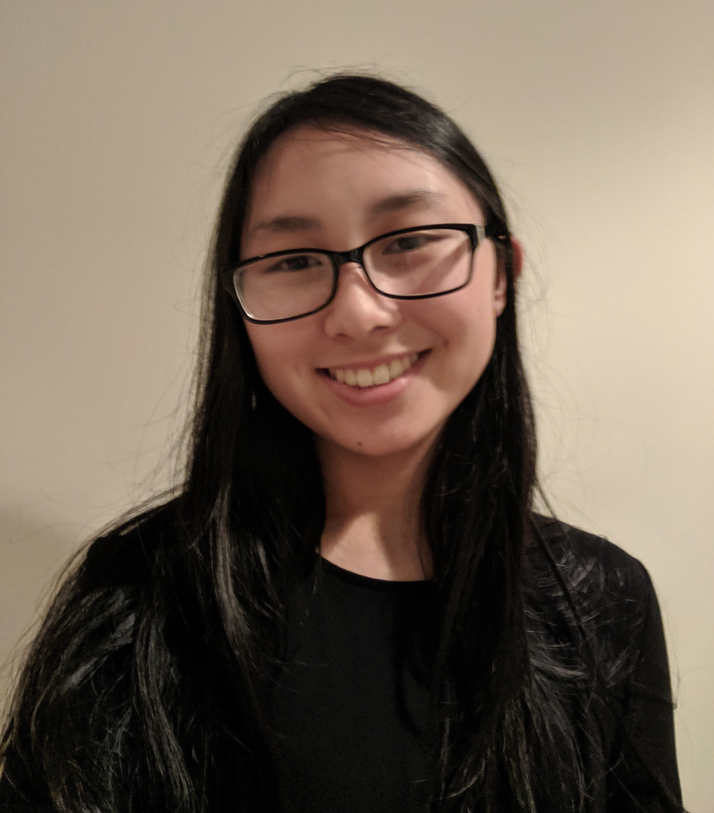

Current head of management of the Barnum Humane Society, Leon has a love for all animals big and small. Have a question about any of our foster animals, adoptees, or rescue missions? Or maybe you just want to get to know the whole team a little better! Contact Leon right away!
Looking to foster an animal? Have any questions about what caring for a pet might entail or how we care for our own animals here at the shelter? Please contact Julia for anything from how to change kitty litter to bridle maintainence for the horses!
Fifth time the website has crashed on you? Having any difficulties opening the website on mobile or filling out the donation form? Please contact Kateri for all technical malfunctions or problems that may occur as you browse our lovely website!
Wondering how your generous donations are being spent? Have questions about any of our practices or operations? Ask William! Our humane society is a nonprofit, and cannot function without all of the donations provided by our caring patrons, supporters, and volunteers. So please come with any and all monetary concerns regarding any of our finances!